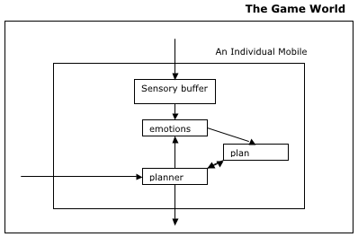

|
An Introduction to Planningby Richard Bartle The model I described last time for a mobile AI, wasn’t actually for a mobile AI; it was for a generic AI. When programming mobiles, we can take advantage of a number of useful MUD-specific features:
This gives a much more program-like model:  Input from the game world is inserted pre-parsed into a sensory buffer. When it’s the mobile’s “turn” to act, its emotional system looks at the buffer. If there’s anything in there that requires action, it interrupts by putting an action at the head of the plan, perhaps something like [handle, event]; otherwise, it checks the planner isn’t looping, and gives it control if not. The planner takes the first action from the plan. If this is a “physical” one, it calls the appropriate game function. If not, it’ll be a mental action (eg. “figure out how to open the door” rather than “get key from bag”) that changes the plan rather than the game world. The planner reads the state of the world directly from the game, instead of from some model of it, although the procedure is moderated so as not to involve cheating (eg. if you’re invisible, it still can’t see you). The plan The core of the system is the plan. This is a basic data structure – a linear list of actions that the mobile intends to perform in sequence. The emotional system is predefined code that defines the general behavioural responses of the mobile, over which it has no control; the planner generates code on the fly in response to the situational needs, which it stores as the plan. I should point out that there are such things as non-linear plans, by the way, but they can be implemented linearly and are more complex than we’re going to need anyway.
then it thinks of some food it knows
then it figures out how to reach the food
and so on. It chips away at the first element of the plan, until it eventually gets to something it can just do. The pixie’s planat this stage will be something like:
He can then execute this plan by performing each action in turn, which will eventually satisfy his original goal of not being hungry. That was a very simple yet somewhat tiresome example. Fortunately, we can get computers to do it all for is.
|
|||